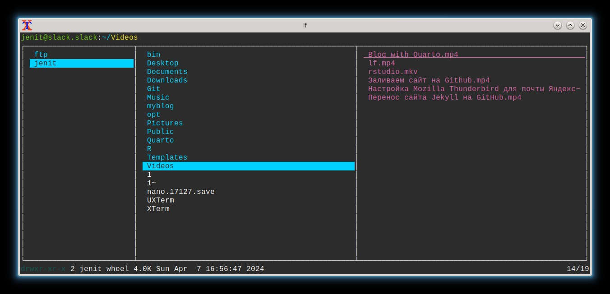

Файловый менеджер
Практически во всех дистрибутивах Линукс есть Midnight Commander - консольный файловый менеджер (mc).Мне больше по душе LF - это минимализм,быстрота,настраиваемость.
LF означает List File — это терминальный файловый менеджер для Linux, написанный на языке Go.
Здесь я не стал подключать превью видео,фото.Я считаю это лишним “наворотом”,отвлекает.Но у кого будет желание,на ютубе множество рецептов.Здесь же самое основное - просмотр,переименование,перемещение,создание,редактирование,удаление.Еще для меня решающим фактором стало - это использование vim-раскладки клавиатуры.Настройки собраны как говорится “с миру - по нитке”.

Как установить LF в Linux
Перейдите на страницу выпусков LF на github и загрузите последнюю и актуальную версию для вашей операционной системы.
Он будет содержать один исполняемый файл, поэтому просто переместите его в нужный каталог.
Запустите приведенную ниже команду, чтобы загрузить последнюю доступную версию для вашей операционной системы:
# wget https://github.com/gokcehan/lf/releases/download/r8/lf-linux-amd64.tar.gz
Извлеките tar-архив с помощью следующей команды:
# tar xvf lf-linux-amd64.tar.gz
Как я уже говорил ранее, просто переместите исполняемый файл в каталог вашего пути:
# mv lf /usr/local/bin
Наконец, запустите команду LF, чтобы использовать ее. Нажимать qдля выхода из команды LF:
# lf
Использование команды LF
Перейдите на следующую страницу для просмотра видеоуроков
Используйте следующие клавиши для навигации по файлам и папкам в каталоге:
k or UP Arrow:Чтобы двигаться вверх
j or DOWN Arrow:Чтобы двигаться внизИспользуйте следующие клавиши для перемещения по половине страницы:
Ctrl+u:Переместиться на полстраницы вверх
Ctrl+d:Переместить на полстраницы внизИспользуйте следующие клавиши для перемещения всей страницы:
Ctrl+b or PgUp:Чтобы переместить всю страницу вверх
Ctrl+f or PgDn:Чтобы переместить всю страницу внизИспользуйте следующие клавиши для перехода к началу и концу списка:
gg or Home:Для перехода в начало списка
G or End:Для перехода в конец спискаИспользуйте следующие клавиши для переключения, инвертирования и снятия пометок с файлов в текущем каталоге:
space:Для переключения файлов в текущем каталоге
v:Инвертирует выборки в текущем каталоге
u:Чтобы снять отметки со всех вариантовИспользуйте следующие клавиши для копирования, вырезания, вставки и удаления файлов:
y:Чтобы скопировать текущий файл или выделенные фрагменты
d:Чтобы вырезать текущий файл или выделенные фрагменты
p:Вставить скопированные или вырезанные файлы в текущий каталог
c:Очищает скопированные или вырезанные файлыИспользовать для чтения встроенных или пользовательских команд:
:set hiddenВведите следующую пользовательскую команду для просмотра скрытых файлов
:set sortby size; set info size Введите следующую пользовательскую команду, чтобы просмотреть файлы и размер каталога.Использовать $ для запуска команды в оболочке:
$ touch magi.txt Чтобы создать новый файл в текущем каталоге
$ mv magi.txt 2g.txt Чтобы переименовать файл.Используйте следующие клавиши для выполнения поиска:
/[Pattern]:Чтобы выполнить поиск
n:Переход к следующему сопоставлению с образцом
p:Переход к предыдущему сопоставлению шаблонов
?[Pattern]:Чтобы выполнить обратный поискНажмите z клавишу, чтобы просмотреть сочетания клавиш по умолчанию, связанные с клавишей z (с префиксом z).
za set info size:time
zh set hidden!
zn set info
zr set reverse!
zs set info size
zt set info timeНажмите s клавишу, чтобы просмотреть сочетания клавиш по умолчанию, связанные с клавишей s (с префиксом s).
sn :{{ set sortby natural; установить информацию; }}
ss :{{ установить размер сортировки; установить размер информации; }}
st :{{ установить время сортировки; установить время получения информации; }}Дополнительные команды.
%[Command]:Используйте это для запуска команды в оболочке при передаче ввода из пользовательского интерфейса и вывода в пользовательский интерфейс
![Command]:Используйте это для запуска команды в оболочке, которая после этого ожидает нажатия клавиши
&[Command]:Чтобы запустить команду в фоновом режиме
h:Чтобы перейти в родительский каталог.Конфигурационный файл LF(создать в ручную директорию,сам файл)
/home/jenit/.config/lf/lfrc
set shell sh
set shellopts '-eu'
set ifs "\n"
set drawbox
set scrolloff 10
set incsearch
set ignoredia
set period 2
set ratios 1:2:2
# set icons true
# Custom Functions
cmd mkdir ${{
printf "Directory Name: "
read ans
mkdir $ans
}}
cmd mkfile ${{
printf "File Name: "
read ans
$EDITOR $ans
}}
# Archive bindings
cmd unarchive ${{
case "$f" in
*.zip) unzip "$f" ;;
*.tar.gz) tar -xzvf "$f" ;;
*.tar.bz2) tar -xjvf "$f" ;;
*.tar) tar -xvf "$f" ;;
*) echo "Unsupported format" ;;
esac
}}
# Trash bindings
cmd trash ${{
files=$(printf "$fx" | tr '\n' ';')
while [ "$files" ]; do
file=${files%%;*}
trash-put "$(basename "$file")"
if [ "$files" = "$file" ]; then
files=''
else
files="${files#*;}"
fi
done
}}
cmd restore_trash ${{
trash-restore
}}
map f ${{
selected="$(fzf)"
[ -d "$selected" ] && cmd=cd || cmd=select
lf -remote "send $id $cmd '$selected'"
}}
map D delete
map x extract # извлечь архив
cmd extract ${{
set -f
case $f in
*.tar.bz|*.tar.bz2|*.tbz|*.tbz2) tar xjvf $f;;
*.tar.gz|*.tgz) tar xzvf $f;;
*.tar.xz|*.txz) tar xJvf $f;;
*.zip) unzip $f;;
*.rar) unrar x $f;;
*.7z) 7z x $f;;
esac
}}
cmd tar ${{
set -f
mkdir $1
cp -r $fx $1
tar czf $1.tar.gz $1
rm -rf $1
}}
cmd zip ${{
set -f
mkdir $1
cp -r $fx $1
zip -r $1.zip $1
rm -rf $1
}}
# Установленные клавиши(hotkey)
# Bindings
map d
map m
# запуск внешних программ
# map c $vscodium "$f"
map gk $konsole "$f"
# map ae $wine "$f"
map au unarchive
# Basic Functions
map . set hidden!
map dd trash
map dr restore_trash
map p paste
map x cut
map y copy
map <enter> open
map R reload
map mf mkfile
map md mkdir
map bg setwallpaper
map C clear
# Movement
map gD cd ~/Documents
map gd cd ~/Downloads
map gp cd ~/Pictures
map gc cd ~/.config
map gr cd ~/repos
map gv cd ~/Videos
map gs cd ~/.local/bin
map gt cd ~/.local/share/Trash/files